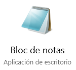
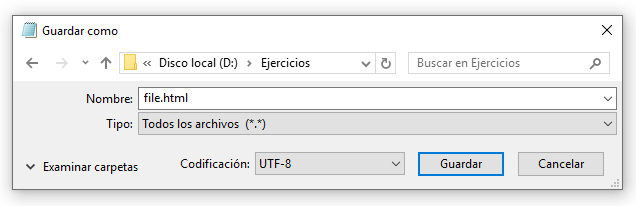

1. Introducció als exercicis HTML i CSS¶
Editor de text¶
Per crear els fitxers que es veuran en aquest tutorial, només cal un simple editor de text.
A Windows, el més senzill és el bloc de notes, que té l’avantatge d’estar a totes les versions de Windows.

En desar el codi HTML o el codi CSS per primera vegada, heu de seleccionar dues opcions per no tenir problemes amb el fitxer.

El tipus de fitxer ha de ser "Tots els fitxers (*. *) "
Amb aquesta opció, es pot triar l’abast del fitxer com a .html o com .css en lloc de desar l’extensió .txt predeterminada, que no serviria.
La codificació ha de ser UTF-8
D’aquesta manera, es desaran i es mostraran caràcters especials com Accents o Eñe correctament.
Per desar les modificacions posteriors del fitxer .html, no cal repetir tot aquest procés.
Simplement seleccioneu al menú Fitxer ... Desa o feu clic a Ctrl-G i es desarà correctament.
Si voleu utilitzar un editor de text més professional i amb més opcions, el `` editor de text Notepad ++ <https://notepad-plus-plus.org/>`__ és gratuït, gratuït i una opció fantàstica.
L’avantatge d’utilitzar NotePad ++ o un altre editor de text avançat és que aquests editors fan ** destacats de la sintaxi ** i això ajuda molt a comprovar els errors i evitar -los mentre escriuen el codi.
Errors de codi¶
Normalment, el navegador no mostra els errors que s’han comès a l’hora d’escriure el codi. De vegades no mostra res si el codi és incorrecte.
Per visualitzar els errors de codi, al navegador Firefox seleccionem al menú Eines ... desenvolupador web ... Inspector
A la part inferior del navegador apareixerà una eina molt útil per comprovar quina part del codi correspon a la pantalla i viceversa.
Aquesta és una petita llista amb els errors més habituals. S'hauria de revisar abans de buscar altres errors menys habituals.
- Una etiqueta no s'ha tancat correctament. Per exemple, a <h1> títol <H1> Li falta la barra de la segona etiqueta:
- Un comentari no s'ha tancat correctament.
Editor de text per a Linux¶
Hi ha molts editors de text compatibles amb el sistema operatiu Linux. Els editors predeterminats com l'editor de text o la ploma GEDIT s'utilitzen per realitzar qualsevol pràctica d'aquest tutorial.
Es recomana utilitzar GEDIT amb la sintaxi destacada (Syntax Hightlight) per trobar errors amb més facilitat. Per activar aquesta opció, heu de seleccionar al menú Vista ... Mode ressaltar ... i el llenguatge utilitzat.